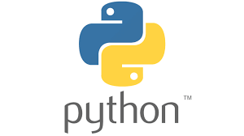
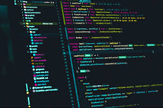
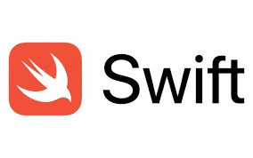
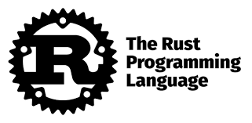

Lenguajes de Programacion
Los lenguajes de programación son sistemas formales utilizados para expresar instrucciones que una
computadora puede ejecutar. Son como idiomas que permiten a los desarrolladores comunicarse con todas las
máquinas para lograr tareas específicas. Existen muchos lenguajes de programación, cada uno con sus propias
características y usos, y la elección del lenguaje adecuado depende del tipo de proyecto y las necesidades
del desarrollador.
Python
Lenguaje de alto nivel, sencillo y legible, muy usado en ciencia de datos, inteligencia artificial,
automatización, desarrollo web y scripting. Tiene una gran comunidad y muchas librerías disponibles.

Ventajas
- Sintaxis clara y legible: La sintaxis de Python es simple y fácil de entender. Su estilo de codificación facilita la lectura y escritura de código, lo que acelera el desarrollo y facilita la colaboración entre equipos.
- Gran comunidad y soporte: Python cuenta con una comunidad activa de desarrolladores que contribuyen con bibliotecas, tutoriales y resuelven dudas en foros. Esto proporciona un valioso respaldo y facilita el aprendizaje y la resolución de problemas.
- Amplia biblioteca estándar: Python incluye una biblioteca estándar extensa que cubre diversas áreas, desde manipulación de archivos hasta desarrollo web. Esto le permite a los desarrolladores aprovechar herramientas existentes sin necesidad de reinventar la rueda.
- Versatilidad y portabilidad: Python es un lenguaje multiplataforma, lo que significa que el código escrito en Python puede ejecutarse en diferentes sistemas operativos sin modificaciones significativas. Esto facilita el desarrollo de aplicaciones que pueden ser utilizadas en una variedad de entornos.
- Desarrollo rápido de prototipos: La facilidad de escritura y la sintaxis concisa hacen que Python sea ideal para el desarrollo rápido de prototipos. Esto le permite a los desarrolladores probar y experimentar con ideas antes de comprometerse con implementaciones más extensas.
- Integración fácil con otros lenguajes: Python puede integrarse fácilmente con otros lenguajes, como C y C++. Esto le permite a los desarrolladores aprovechar código existente y obtener un rendimiento óptimo cuando sea necesario.
Desventajas
- Velocidad de ejecución: Python, al ser un lenguaje interpretado, puede ser más lento en comparación con lenguajes compilados, como C++ o Java, esta es una de las mayores desventajas del lenguaje python. Esto puede ser una limitación en aplicaciones que requieren un rendimiento extremadamente rápido, como desarrollo de juegos o cómputo intensivo.
- Gestión de memoria automática: Aunque la gestión automática de memoria es una ventaja para muchos desarrolladores, puede ser una desventaja en aplicaciones que requieren un control preciso de los recursos de memoria, ya que Python no proporciona la misma flexibilidad que lenguajes de bajo nivel.
- No es ideal para desarrollo móvil: Aunque existen frameworks como Kivy o BeeWare, Python no es considerado el lenguaje principal para el desarrollo móvil. Otros lenguajes como Swift o Kotlin son preferidos en este contexto.
- Problemas de comprensión asíncrona: Aunque Python ha mejorado en la gestión de operaciones asíncronas, algunos desarrolladores aún encuentran desafíos al trabajar con código asincrónico, especialmente en comparación con lenguajes diseñados específicamente para manejar tareas concurrentes.
- Interpretación y ejecución: El hecho de que Python sea interpretado puede ser una desventaja en términos de velocidad de ejecución en comparación con lenguajes compilados. Sin embargo, esta desventaja se ve mitigada por las implementaciones Just-In-Time (JIT) como PyPy.
- Problemas de integración con C/C++: Aunque Python se puede integrar con C y C++, puede haber desafíos y complejidades asociadas con la interacción entre estos lenguajes, especialmente en proyectos más grandes.

Java
Lenguaje orientado a objetos, muy usado en aplicaciones empresariales, móviles (Android) y sistemas grandes.
Su lema es "escribe una vez, corre en cualquier parte" gracias a la Máquina Virtual de Java (JVM).

Ventajas
- Portabilidad: Java es conocido por su portabilidad, lo que significa que el código escrito puede ejecutarse en diferentes plataformas sin necesidad de modificaciones significativas. En este sentido, la máquina virtual Java (JVM) permite que sus aplicaciones sean independientes del sistema operativo, brindando una flexibilidad valiosa. Esta portabilidad no solo simplifica el desarrollo, sino que también facilita la distribución de aplicaciones a través de diferentes entornos sin preocuparse por la compatibilidad del sistema.
- Orientado a objetos: Java es un lenguaje completamente orientado a objetos, lo que fomenta la reutilización del código y la modularidad. ¿Qué implica esto? Que es un enfoque que proporciona una estructura clara y facilita el mantenimiento y la expansión de los proyectos a medida que evolucionan con el tiempo. Es decir que la programación orientada a objetos en Java promueve la encapsulación, la herencia y el polimorfismo, permitiendo un desarrollo eficiente y sostenible de software a gran escala.
- Fuerte soporte de la comunidad: La comunidad Java es vasta y activa: hay una abundancia de recursos en línea, tutoriales y foros que facilitan la resolución de problemas y el aprendizaje continuo. Este apoyo grupal contribuye al desarrollo y la mejora constante del lenguaje. Además, la disponibilidad de bibliotecas y frameworks de código abierto respaldados por la comunidad amplía las capacidades de desarrollo y acelera los procesos de implementación.
- Seguridad: Java ha sido diseñado haciendo foco en la seguridad, motivo por el cual incluye características como la gestión automática de memoria y la verificación de tipos. La máquina virtual Java también actúa como una barrera de seguridad, aislando la ejecución del código del sistema subyacente.
- Rendimiento: Aunque la máquina virtual introduce cierta sobrecarga, las implementaciones modernas de Java han mejorado significativamente el rendimiento. De esta manera, las aplicaciones bien optimizadas pueden competir en términos de velocidad con aplicaciones escritas en lenguajes de bajo nivel. Esta capacidad de ejecutar programas en una amplia variedad de dispositivos y sistemas operativos (sin sacrificar el rendimiento) fue clave para la longevidad y la relevancia continua de este lenguaje en el panorama de desarrollo de software.
- Desarrollo escalable: Java es ideal para el desarrollo de aplicaciones escalables: su arquitectura robusta permite la construcción de sistemas que pueden crecer para manejar mayores cargas de trabajo y usuarios concurrentes. Por lo tanto, la gestión eficiente de los recursos y las capacidades de concurrencia facilitan el desarrollo de aplicaciones que pueden escalar horizontal o verticalmente según las necesidades del negocio.
C++
Extiende a C con programación orientada a objetos. Es usado en videojuegos, software de alto rendimiento y
sistemas que requieren control del hardware.

C# (C Sharp)
Lenguaje de Microsoft orientado a objetos. Usado principalmente en desarrollo de aplicaciones para Windows y
juegos con Unity. Funciona sobre la plataforma .NET.

JavaScript
Lenguaje del lado del cliente en el desarrollo web. Permite crear páginas web dinámicas e interactivas.
También se usa en el backend con Node.js.

TypeScript
Superset de JavaScript que añade tipado estático. Mejora el desarrollo a gran escala y facilita la detección
de errores en tiempo de desarrollo.
Ruby
Lenguaje elegante y legible, orientado a objetos. Es conocido por el framework web Ruby on Rails, que
facilita el desarrollo rápido de aplicaciones web.
PHP
Lenguaje de scripting muy utilizado para desarrollo web del lado del servidor. A pesar de las críticas, sigue
siendo la base de muchos sitios web, incluidos WordPress y Facebook en sus inicios.
Swift
Lenguaje moderno de Apple para el desarrollo de aplicaciones iOS, macOS, watchOS y tvOS. Es rápido, seguro y
fácil de usar.

Go (Golang)
Lenguaje creado por Google, simple y eficiente. Ideal para servidores, microservicios y aplicaciones
concurrentes. Muy rápido y con buen manejo de la concurrencia.

Rust
Lenguaje de sistemas enfocado en la seguridad y el rendimiento sin recolector de basura. Es ideal para
software que requiere alta confiabilidad.

SQL
Lenguaje de consulta estructurado. No es un lenguaje de programación general, pero se usa para gestionar y
consultar bases de datos relacionales.